异常的概述
一、异常的概述及由来
异常：就是Java程序在运行时出现的问题
异常的由来：问题也是现实生活中一个具体的事物，也可以通过Java的类的形式进行描述，并封装成对象。其实就是Java对不正常情况进行描述后的对象体现。
Throwable 类是 Java 语言中所有错误或异常的超类。只有当对象是此类（或其子类之一）的实例时，才能通过 Java 虚拟机或者 Java throw 语句抛出。类似地，只有此类或其子类之一才可以是 catch 子句中的参数类型。
二、异常的分类
举个例子简单说明下Exception和Error
前提：今天天气超好，toulan要去山里呼吸新鲜空气
- 山路前几天下大雨坍陷了，无法过去，toulan及时停住，但是由于山路塌陷了无法进山。
- 山路没有塌陷：
- toulan在上山前，发现轮胎没气了，于是，偷懒将轮胎的气吹了起来，然后继续上山。
- toulan上山时，上山前，将一切可能发生的问题都解决了，但是toulan玩心大，在路上看见，一些碎玻璃渣，按正常行驶，是没有问题的，但是，toulan非要去在碎玻璃渣上走，导致爆胎了。
程序中的异常：Throwable
- 严重问题：error，我们不处理，一般是比较严重的问题。（例如内存溢出，这在我们写程序是是无法预测的）
- 问题：Exception
- 编译器异常：不是RuntimeException，这种是必须处理的，因为你不处理编译就无法通过。
- 运行期异常：RuntimeException，我们也不做处理，而且出现这种问题一般是我们代码写的不够严谨，需要修正代码。
异常分类图解：
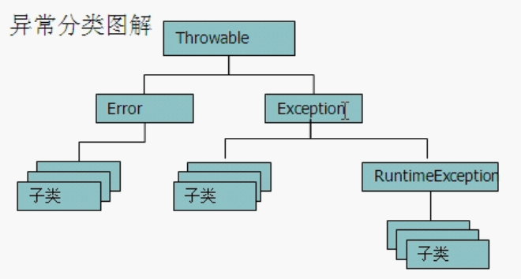
三、jvm如何默认处理异常
如果程序出现了问题，我们没有做任何处理，最终JVM会做出默认处理，把异常的名称原因以及出现的问题输出在控制台上，看似很好，但是，同时也会结束程序。
示例代码如下：
public class ExceptionDemo {
public static void main(String[] args) {
int a = 10;
int b = 0;
System.out.println(a /b );
System.out.println("Hello Exception");
}
}运行结果：
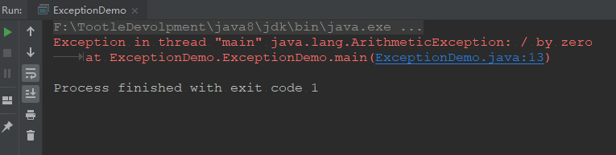
我们发现，jvm默认的异常处理不仅会将出错的原因，出错的异常名称，以及异常的文件的第几行都输出在控制台，但是，我么发现，System.out.println("Hello Exception");，没有打印出来，也就是说，在捕获第一个异常后，程序会终止，这就是我们处理异常的原因。
四、try捕获异常
其实捕获异常很简单，最常见的就是
try{
//可能出现问题的代码
}catch(异常名 变量){
//针对问题的处理
}finally{
//释放资源
//例如在线程中释放锁
}
throws //抛出
一般用第一种
try{}catch(){}finally{}
//变形
try{
}catch(){
}
try{
}finally{
}
注意
- try里面的代码越少越好，因为放在try里面就要走异常处理机制，走异常处理机制Java虚拟机就会开启新的资源来管理这些代码，代码越多，Java就需要更多的资源来管理他，所以越少越好
- catch里面必须有内容，哪怕是简单的提示，否则没有意义，因为，如果不写，那就是隐藏了一个bug，而且我们并不知情。
比如上面的哪个代码问题，我们就可以进行捕获，如下：
public class ExceptionDemo {
public static void main(String[] args) {
int a = 10;
int b = 0;
try {
System.out.println(a /b );
} catch (ArithmeticException e) {
e.printStackTrace();
System.out.println("算数异常");
}
System.out.println("Hello Exception");
}
}运行结果：
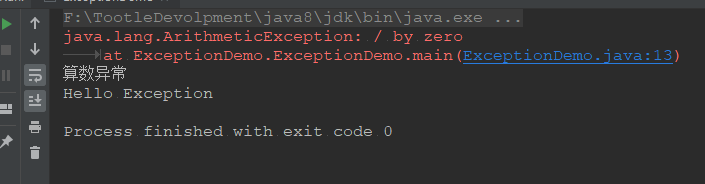
我们发现，异常也捕捉了，程序也继续运行了，这就是我们重新自己捕获异常的原因。
多异常处理
public class ExceptionDemo {
public static void main(String[] args) {
//method1();
method2();
method3();
}
private static void method3() {
int a = 10;
int b = 0;
int[] arr = {1, 2, 3, 4};
try {
System.out.println(a /b );
System.out.println(arr[4]);
} catch (ArithmeticException e) {
System.out.println("除数不能为零");
}catch (ArrayIndexOutOfBoundsException e) {
System.out.println("索引越界");
}
System.out.println("over");
}
private static void method2() {
int a = 10;
int b = 0;
try {
System.out.println(a /b );
} catch (ArithmeticException e) {
System.out.println("除数不能为零");
}
int[] arr = {1, 2, 3, 4};
try {
System.out.println(arr[4]);
} catch (ArrayIndexOutOfBoundsException e) {
System.out.println("索引越界");
}
System.out.println("over");
}
}运行结果：
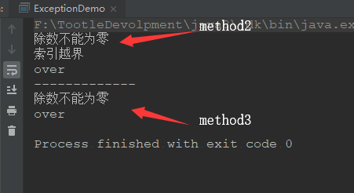
利用try…catch…一旦try里面出现了问题，就会把问题给抛出去，一旦有匹配的就会执行catch里面的代码，然后结束掉try…catch…，继续执行后面的代码。
注意：平级关系位置无所谓，有子父关系的异常，父不能放在最前面
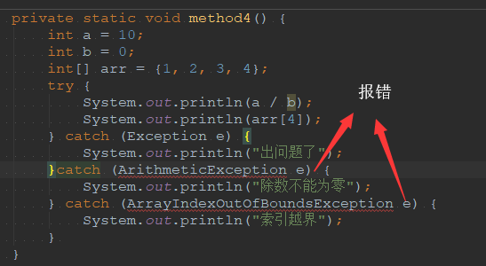
jdk7的新特性：
private static void method4() { int a = 10; int b = 0; int[] arr = {1, 2, 3, 4}; try { System.out.println(a / b); System.out.println(arr[4]); } catch (ArithmeticException | ArrayIndexOutOfBoundsException e) { System.out.println("出问题了"); } }注意：
多个异常间只能是兄弟关系，如果是子父关系，就会报错。
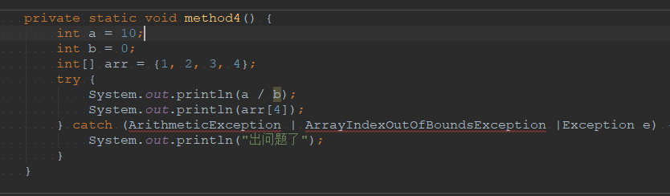
五、编译期异常和运行期异常的区别
编译期异常：顾名思义，就是在程序编译时间就出现的异常。
运行期异常：就是在程序运行时出现的异常。
编译期异常：
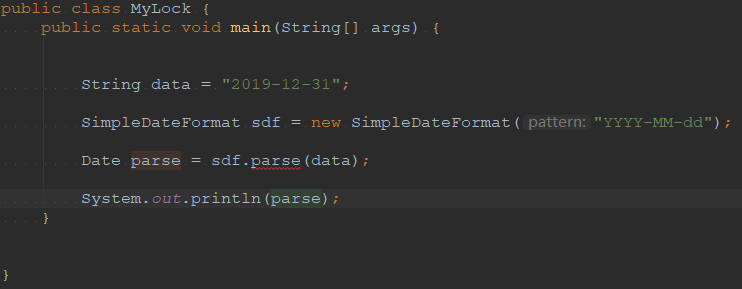
public class MyLock {
public static void main(String[] args) {
String data = "2019-12-31";
SimpleDateFormat sdf = new SimpleDateFormat("YYYY-MM-dd");
Date parse = sdf.parse(data);
System.out.println(parse);
}
}如果我们不捕捉异常，那么，编译器就会：
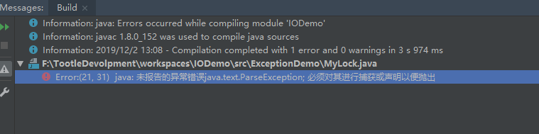
所以，我们需要捕捉异常，代码如下
public class MyLock {
public static void main(String[] args) {
String data = "2019-12-31";
SimpleDateFormat sdf = new SimpleDateFormat("yyyy-MM-dd");
Date parse = null;
try {
parse = sdf.parse(data);
System.out.println(parse);
} catch (ParseException e) {
System.out.println("出问题了！");
}
}
}运行结果：
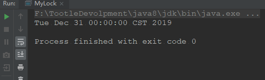
运行期异常：
大部分的运行时期异常，都是我们写程序时不够严谨导致的，可以通过修改代码达到除去异常的目的。
public class MyLock {
public static void main(String[] args) {
int a = 10;
int b = 0;
try {
if(b==0){
System.out.println("除数为零");
}else{
System.out.println(a /b );
}
} catch (ArithmeticException e) {
e.printStackTrace();
System.out.println("算数异常");
}
System.out.println("Hello Exception");
}
}运行结果：
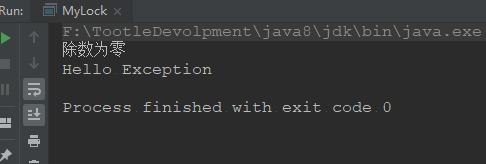
六、throws方式抛出异常
主要在方法上抛出异常，一般不再main方法上使用throws抛出异常。
public class ExceptionDemo2 {
public static void main(String[] args) {
System.out.println("今天是");
try {
//因为我们在这里调用了抛出异常的方法，所以我们要处理它。
method();
} catch (ParseException e) {
e.printStackTrace();
}
System.out.println("天气真好");
}
//一般在方法上抛出异常，在这里抛出异常，意思是，我不想或者是我们不能处理这个异常，把他交给调用它的方法，
//谁调用，谁捕获这个异常。
private static void method() throws ParseException {
String s = "2019-12-01 07:25:32";
SimpleDateFormat sdf = new SimpleDateFormat("yyyy-MM-dd HH:mm:ss");
System.out.println(sdf.parse(s));
}
}运行结果：
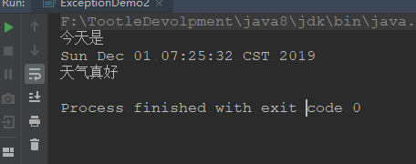
编译器异常抛出，将来调用者必须处理。
运行期异常，将来调用者不必处理，当然也可以处理。
public class ExceptionDemo2 {
public static void main(String[] args) {
System.out.println("今天是");
try {
method();
} catch (ParseException e) {
e.printStackTrace();
}
try {
method2();
} catch (ArithmeticException e) {
e.printStackTrace();
}
System.out.println("天气真好");
}
private static void method2() throws ArithmeticException {
int a = 10;
int b = 0;
System.out.println(a / b);
}
private static void method() throws ParseException {
String s = "2019-12-01 07:25:32";
SimpleDateFormat sdf = new SimpleDateFormat("yyyy-MM-dd HH:mm:ss");
System.out.println(sdf.parse(s));
}
}运行结果：
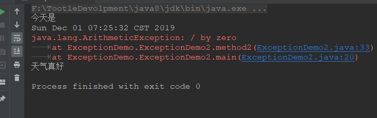
七、throw方式抛出异常
通过代码进行讲解
public class ThrowDemo {
public static void main(String[] args) {
try {
method();
} catch (Exception e) {
e.printStackTrace();
}
System.out.println("throw 抛出异常");
}
private static void method() throws Exception {
int a = 10;
int b = 0;
if (b == 0) {
//当我们抛出Exception异常时，会发现这里出错了，
//那是因为Exception是编译时异常，需要我们进行抛出，并在main中进行try...catch..
throw new Exception();
}else{
System.out.println(a / b);
}
}
}我们发现，当我们使用throw进行抛出异常时，用的是该类的对象，而不像throws一样，直接抛出异常类，
重点：throw抛出的是该类的对象，throws抛出的是该类
throws和throw的区别
throws：
- 用在方法后面，跟的是异常类名
- 可以跟多个异常类名，用逗号隔开
- 表示抛出异常，由该方法调用者处理
- throws表示出现异常的一种可能性，并不一定会发生这些异常
throw：
- 用在方法体内，用的是异常对象名
- 只能抛出一个异常对象名
- 表示抛出异常，由方法体内语句处理
- 执行throw一定是抛出了某种异常
八、finally关键字的特点及作用
被finally修饰的代码一定会被执行
public class FinallyDemo {
public static void main(String[] args) {
try {
method();
} catch (ParseException e) {
e.printStackTrace();
//System.exit(1);
}finally {
System.out.println("这里的代码一定会执行");
}
}
private static void method() throws ParseException {
String s = "2019-12-01";
SimpleDateFormat sdf = new SimpleDateFormat("yyyy-MM-dd HH:mm:ss");
System.out.println(sdf.parse(s));
}
}运行结果：
但是如果在finally之前虚拟机结束运行，那么就不会执行finally中的语句
public class FinallyDemo {
public static void main(String[] args) {
try {
method();
} catch (ParseException e) {
e.printStackTrace();
//提前终结虚拟机
System.exit(1);
}finally {
System.out.println("这里的代码一定会执行");
}
}
private static void method() throws ParseException {
String s = "2019-12-01";
SimpleDateFormat sdf = new SimpleDateFormat("yyyy-MM-dd HH:mm:ss");
System.out.println(sdf.parse(s));
}
}运行结果：
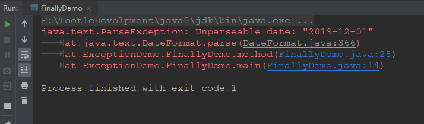
九、finally、final、finalize的区别
finally：是异常处理的一部分，用于释放资源，一般来说，代码肯定会执行，特殊情况：在执行finally之前jvm退出了
final：最终的意思，可以用于修饰类，修饰方法，修饰变量
final修饰类，类不能被继承
final修饰方法：方法不能被重写
final修饰变量：变量是常量
finalize：是Object类的一个方法，用于垃圾回收，一般不需要我们调用
十、如果catch里面由return语句，程序还会执行finally里面的代码吗？，在return前还是在return后？
会。前。
准确的说，是在中间。
public class FinallyDemo {
public static void main(String[] args) {
System.out.println(getInt());
}
private static int getInt() {
int a = 10;
try {
System.out.println(a / 0);
a = 20;
} catch (ArithmeticException e) {
a=30;
return a;
} finally {
a = 40;
}
return a;
}
}运行结果：
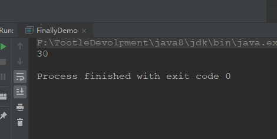
通过结果我们发现，好像是没有走到finally中去，因为输出的是30，而不是40，但实际上，我们通过debug过程中发现，其实是走了finally中的代码。
通过下面两张图片我们会更加清晰：
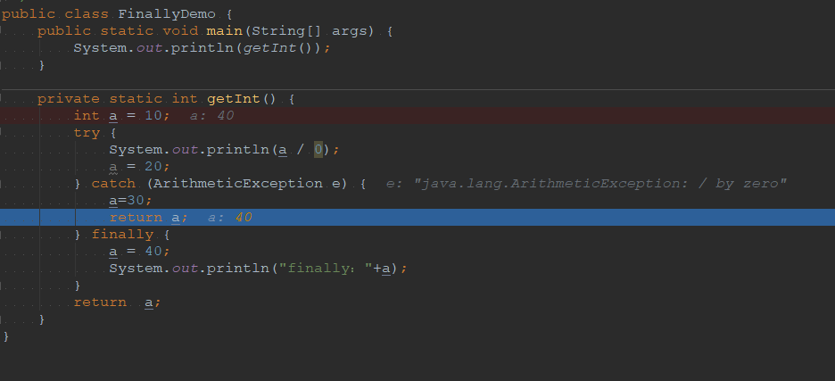
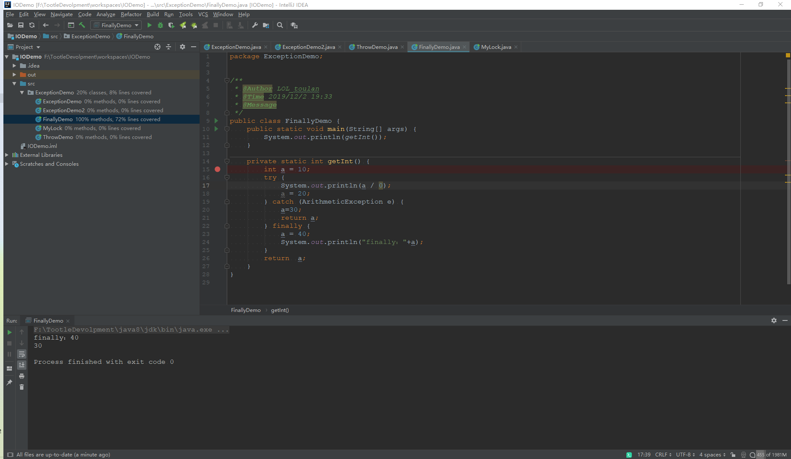
通过这两征途我们明确的知道finally里面的代码的确是走了，但是最终输出的还是30，为什么呢？
答案是：
因为当程序走到catch里面的return的时候，这里的return a不再是return a了，而是return 30，此时程序的返回路径就形成了，但是，刚准备进行return的时候，发现后面还有finally，此时程序会继续执行finally，然后会再回到catch里面的return，但是此时return的不是a，而是return 30，所以输出的是30.
十一、自定义异常.
自定义异常两种方式：
继承Exception
继承RuntimeException
为什么要自定义异常
举个例子
按百分之来说，一次考试中，发现有的同学120，有的同学-20，这些数据明显就是不合理的，数据的区间应该在[0,100]，所以我们就要自己进行自定义异常，来对程序进行优化
所以我们知道Java不可能考虑到所有的异常，所以在实际开发中，我们往往需要自定义异常，如果我们要写一个异常类我们就要继承Exception或者是RuntimeException，否则无法当作一个异常类。
代码如下：
public class MyException extends Exception {
public MyException() {
}
public MyException(String s) {
super(s);
}
}public class Teacher {
public void check(int score) throws MyException {
if (score > 100 || score < 0) {
throw new MyException("please input a number at 0 to 100");
}else
System.out.println("分数没有问题");
}
}public class TeacherTest {
public static void main(String[] args) {
Scanner sc = new Scanner(System.in);
System.out.println("请输入学生成绩：");
while (true) {
int s = sc.nextInt();
Teacher teacher = new Teacher();
try {
teacher.check(s);
} catch (MyException e) {
e.printStackTrace();
}
}
}
}运行结果：
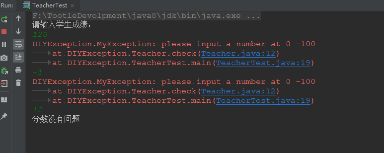
十二、异常的注意事项
子类重写父类方法时，只能抛出父类相同的或者父类中异常的子类异常，
父类抛出了多个异常子类重写父类时，只能抛出父类相同的或者父类中异常的子类异常，不能抛出父类没有抛出的异常
如果被重写的方法没有抛出异常，那么子类绝不可以抛出异常，如果子类方法中有异常发生，只能用try，不能用throws
十三、我们到底该如何处理异常呢？
原则：
如果该类内部可以将问题处理用try，如果处理不了，用throws
区别：
- 后续程序需要继续运行就用try
- 后续程序不需要继续运行就用throws
举例：
- 感冒了自己吃点药就好了，try
- 吃了没好，又得了流感，throws
- 如果医院没有特效药，error
十四、总结
异常：
程序出现的不正常情况
异常体系
Throwable
Error 严重问题，我们不处理
Exception
RuntimeException 运行时期异常，我们需要修改代码逻辑
非RuntimeException 编译器异常，我们必须处理
我们自己处理异常的原因是，jvm在进行处理异常时，会把异常名称，原因，位置等信息输出在控制台，但是同时他也会将程序停掉，程序不能在执行了。
常见的处理方式
throw
用throw时应注意，throw的不是异常类名，而是异常类对象
throw new ArithmeticException();这是在代码块内部做处理
只能throw一个异常，由方法体内部处理，在调用该方法时try…catch..
throw抛出的是一个异常对象，说明这里一定有异常产生了
throws
throws在抛出异常时，能够通过同时抛出多个，throws抛出的异常，是一种可能性并不一定会产生，但抛异常时应注意，如果两个类有继承关系，那么：
子类重写父类方法时，只能抛出父类相同的或者父类中异常的子类异常，
父类抛出了多个异常子类重写父类时，只能抛出父类相同的或者父类中异常的子类异常，不能抛出父类没有抛出的异常
如果被重写的方法没有抛出异常，那么子类绝不可以抛出异常，如果子类方法中有异常发生，只能用try，不能用throws
try…catch…finally….
try里面的代码越少越好，因为放在try里面就要走异常处理机制，走异常处理机制Java虚拟机就会开启新的资源来管理这些代码，代码越多，Java就需要更多的资源来管理他，所以越少越好
catch里面必须有内容，哪怕是简单的提示，否则没有意义，因为，如果不写，那就是隐藏了一个bug，而且我们并不知情。
自定义异常
所以我们知道Java不可能考虑到所有的异常，所以在实际开发中，我们往往需要自定义异常，如果我们要写一个异常类我们就要继承Exception或者是RuntimeException，否则无法当作一个异常类。